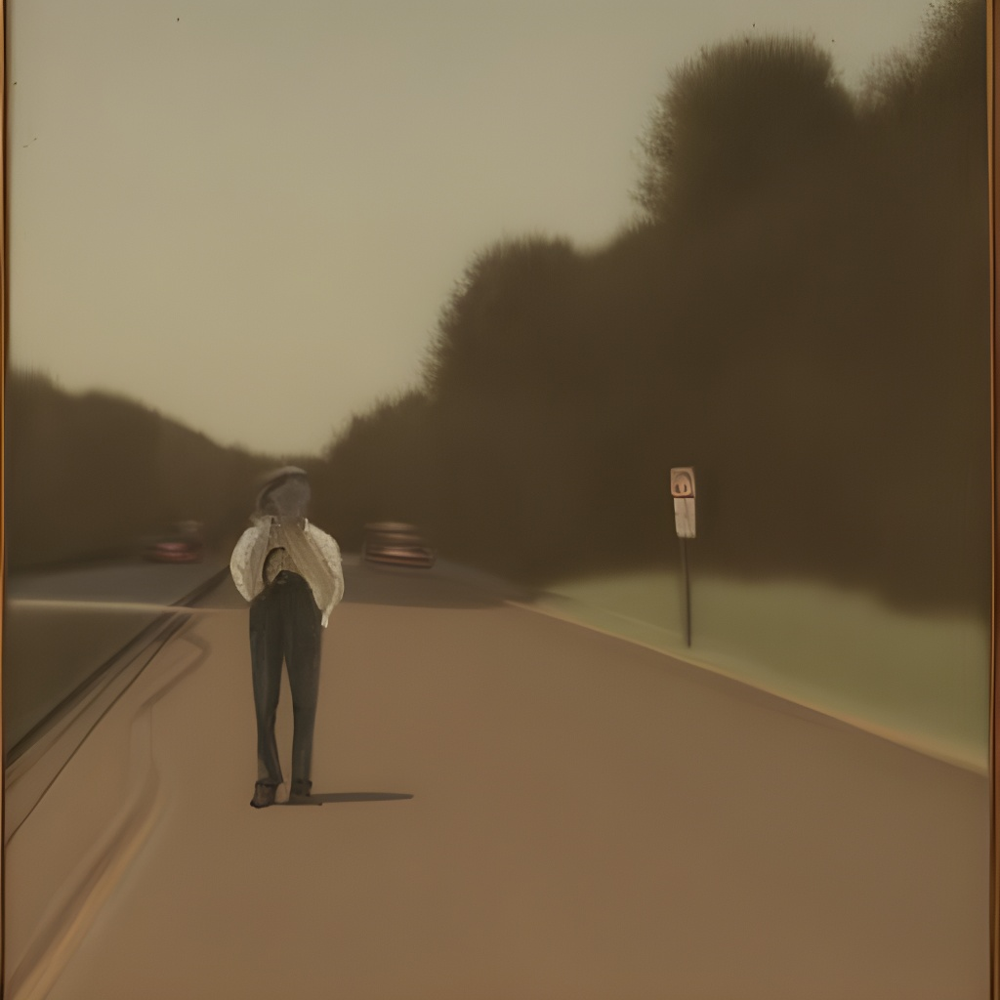

PASSANTE

Non sono del tutto sicuro di conoscerti eppure ci vediamo spesso.
Ma d'altronde vedere e guardare hanno lo stesso significato?
E c'è qualcosa che davvero ha un significato?
Non hai tempo per queste ed altre domande e sei già andato via, peccato che è solo una mia impressione e non tua, perché tu continui a passare senza sfiorare nulla, in un terrificante inferno senza fine.
Trovi facilmente lavoro come mezzo di trasporto e sei molto bravo a cucinare con i sughi pronti.
Idee per la casa sugli alberi:
Basta con ste stronzate